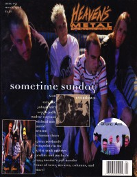

CMnexus
:
Contemporary Christian culture, music, and media.
Magazines
Profiles
Dove Awards
cmnexus.org
CM
nexus
→
Profiles
→
Writers: C
→
Andrew Crump
Andrew Crump
< -- Prev
ious
Next-- >
1
Writing credits listing
Nov 1993
in
Heaven's Metal
#44
"New Name. Same Focus."
Legend Seven
(formerly
Legend
)
"The Prayer Chain"
The Prayer Chain
,
Love Coma
Legend Seven
-
Blind Faith
Crucifix
-
Crucifix
Sevenfold
-
Land of the Living
Latter Reign
-
Live for the Day
Sometime Sunday
-
Pain
Chryztyne
-
Tales of Paradise
The Triple Ace Band
-
demo
Jan 1994
in
Heaven's Metal
#45
"Still Rockin' For The King"
Barren Cross
"Behold! The Red Sea"
Red Sea
"If But For Detritus"
Detritus
"In Your Face"
Decision-D
Concert Review:
Galactic Cowboys
Concert Review:
Saviour Machine
,
Deliverance
Hot Pink Turtle
-
Ticklejigglewigglepickle
Anathema
-
Anathema
New Society
-
In Focus
Broken Silence (CA)
-
Discerning The Times
Tera
-
2-song demo
Book Review:
Christian Rock: Friend or Foe?
Ritual
-
5-song demo
Soul Child
-
demo
Cathacomb
-
5-song demo
Relyant
-
4-song demo
Reign's Edge
-
8-song demo
Happy Fiche
-
demo
Mar 1994
in
Heaven's Metal
#46
"There Goes A Strange One"
Precious Death
"Nobody's Fault But Theirs"
The 77s
May 1994
in
Heaven's Metal
#47
"Casting The First Stone"
Sometime Sunday
"Label Profile: R.E.X."
R.E.X. Music
, interview with
Tyler Bacon
Jul 1994
in
Heaven's Metal
#48
"The Brave's Daring Move"
The Brave
"The Industrial Revolution"
Chatterbox
,
Circle of Dust
,
Brainchild
,
Scott Albert
Sep 1994
in
Heaven's Metal
#49
"Looking Back With The Crucified"
The Crucified
; statements from each member
Sometime Sunday
-
Stone
Nov 1994
in
Heaven's Metal
#50
"A Trio of Two??"
Mission of Mercy
"Swinging With Guardian"
Guardian
Jan 1995
in
Heaven's Metal
#51
The Blamed
"Released and Ratting Cages"
Barren Cross

Mar 1995
in
Heaven's Metal
#52
"Tougher Than Stone"
Sometime Sunday
"Can We Be Serious?"
Don't Know
May 1995
in
Heaven's Metal
#53
"Meet Johnny Q. Public"
Johnny Q. Public
Jul 1995
in
Heaven's Metal
#54
Sometime Sunday
-
Drain
Dec 1995
in
HM
#56
"Rose Comes Home"
Randy Rose
"Fresh Produce"
Upside Down Room
< -- Prev
ious
Next-- >
1
CMnexus
(noun)
The magazine index
of modern music
and Christianity
© 2011 CMnexus. Last updated August 2025.
Contact:
Rants and other correspondence to:
editor -AT- cmnexus
-DØT- org
About